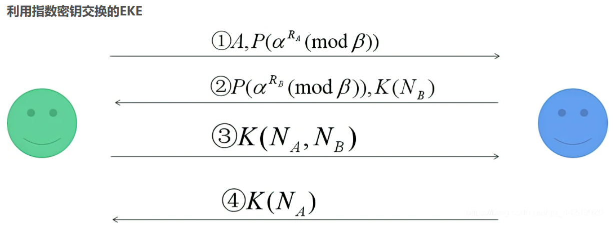
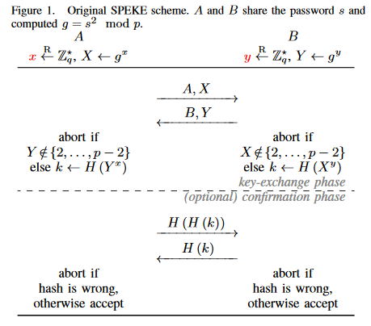
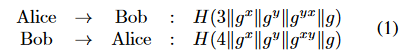
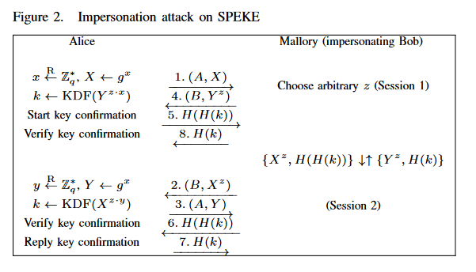
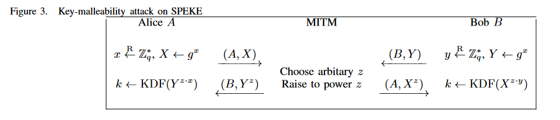
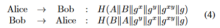

In this paper, we analyse the SPEKE protocol as specified in the ISO/IEC and IEEE standards. We identify that the protocol is vulnerable to two new attacks
impersonation attack
allows an attacker to impersonate a user without knowing the password by launching two parallel sessions with the victim
key-malleability attack
allows a man-in-the-middle (MITM) to manipulate the session key without being detected by the end users
We propose a patched SPEKE called P-SPEKE and present a formal analysis in the Applied Pi Calculus using ProVerif to show that the proposed patch prevents both attacks.
Introduction
password-authenticated key exchange (PAKE) protocol
purpose: a low-entropy secret password known to both -> establish a high-entropy session key for secure communication
EKE protocol
question: password leakage
SPEKE1996
We first observe that the original SPEKE protocol is subtly different from those defined in the standards. The difference has significant security implications, which are not explained in the standards.
contributions
- find two new attacks on SPEKE
- To address the identified problems, we propose a patched SPEKE, called P-SPEKE, which prevents both attacks by including the user identities in the key derivation function without altering the symmetry of the original SPEKE protocol.
- We build a formal model in the Applied Pi Calculus using ProVerif and apply it to formally analyse P-SPEKE. Our analysis confirms that the proposed patch is immune to the attacks.
- Finally, we identify an efficiency problem with the key confirmation procedure specified in both the ISO/IEC and IEEE standards and accordingly propose an improved procedure.
Background
Password Authenticated Key Exchange
A PAKE protocol serves to provide two functions: authentication and key exchange.
- EKE: using the shared password as a symmetric key to encrypt Diffie-Hellman key exchange items
Variants of EKE (e.g., SPAKE2) often differ only in how the symmetric cipher is instantiated.

- SPEKE: using the shared password to derive a secret group generator for performing Diffie-Hellman key exchange
There are variants of SPEKE, such as Dragonfly and PACE, which use different methods to derive the secret generator from the password.
- J-PAKE: using the password to randomize the secret exponents in order to achieve a cancellation effect
A distinctive feature of J-PAKE as compared to the other two is its use of Zero Knowledge Proof (ZKP) to enforce participants to follow the protocol specification.
By comparison, the use of ZKP is considered incompatible with the design of EKE and SPEKE.
common properties of a secure PAKE
- Correctness
- Secrecy of the pre-shared password
- Implicit key authentication
- Explicit key authentication
- Weak and strong entity authentication
- Perfect forward secrecy
The original SPEKE
- Upon receiving g^y, Alice verifies that its value is between 2 and p − 2. This is to prevent the small subgroup confinement attack
- The key-exchange phase is completely symmetric. The symmetry in the design helps simplify the security analysis and reduce the communication rounds especially in a mesh network
- The key confirmation method has two subtle issues
- it is ambiguous which party should send H(H(k)) first
- from a theoretical perspective, the direct use of the session key in the key confirmation process renders the session key no longer indistinguishable from random after the key confirmation is finished, hence breaking the session-key indistinguishability requirement in a formal model

Previous attacks
exponential-equivalence attack
- two different passwords s and s′ may have the relation that s′ = s^r mod p where r is an arbitrary integer(r != 1). By exploiting this relation, an active attacker can rule out two passwords in one go
- As a countermeasure, Zhang proposed to hash the password before taking the square operation: in other words, redefining the password mapping function to f(s) = (H(s))^2 mod p
unilateral Unknown Key-Share (UKS) attack
- sessions swap attack
Specification in standards
the generator is obtained from g = (H(s))^2 mod p instead of g = s^2 mod p as in the original 1996 paper
the key confirmation procedure of SPEKE defined in the standards is also different from that in the original SPEKE paper

the fact that g^x comes before g^y in the definition of key confirmation implies there is an order during the key exchange phase
key point: original SPEKE specifies that “Alice” sends the first confirmation message H(H(k)). Given the symmetric nature of the protocol, it is ambiguous which party is “Alice”.
New attacks
Impersonation attack

This confusion of identities in the key establishment can cause problems in some scenarios.
Key-malleability attack

In the original SPEKE paper, the protocol has no security proofs; it is heuristically argued that the security of the session key in SPEKE depends on either the Computational DiffieHellman assumption (i.e., an attacker is unable to compute the session key) or the Decisional Diffie-Hellman assumption (i.e., an attacker is unable to distinguish the session key from random).
The existence of such a key-malleability attack suggests that a clean reduction to CDH or DDH is not possible. As an example, z can be a result of an arbitrary function f (·) with the incepted inputs, i.e., z = f (g^x, g^y). Because of the correlation of values on the exponent, standard CHD and DDH assumptions are not applicable since they require the secret values on the exponent be independent.
Discussion on standards
- Explicit key confirmation
- Do not affect Impersonation attack, Key-malleability attack can also work in the implicitly authenticated version
- Definition of shared secret
- the definition of the shared secret in ISO/IEC 11770-4:2006 seems to include the “identifiers for one or more entities” as part of the shared secret. However, the standard does not provide any formula about π. It is not even clear if one or both entities’ identifiers should be included, and if only one identifier is to be included, which one and how.
- In the latest revision in ISO/IEC 11770-4:2017, the definition of the shared secret has been revised to follow the same as in IEEE P1363.2 (D26). In this revision, the two reported attacks are addressed by making technical changes to the SPEKE specification
Solution
Patched SPEKE
There are several reasons to explain the cause of the two attacks.- First, there is no reliable method in SPEKE to prevent a sent message being relayed back to the sender.
- Second, there is no mechanism in the protocol to verify the integrity of the message, i.e., whether they have been altered during the transit.
- Third, no user identifiers are included in the key exchange process.
The session key computation is defined below. the hash output has a fixed bit length, which makes it easier to implement the max and min function.

Improved key confirmation
we propose an improved key confirmation method which preserves the symmetry of the protocol and hence allows the key confirmation to be completed within one round.

Advantages & disadvantages
优点
- 提出两种针对ISO/IEC SPEKE的攻击，并分析造成攻击的根本原因
- 提出patched-SPEKE，安全性、协议对称性、round-efficiency都有所提高
- 使用proverif进行形式化分析，将传统人类密码分析与使用现代自动证明技术相结合，给改进安全协议提供新思路
缺点/不足
和原始SPEKE一样，缺乏完整安全证明
未证明 SPEKE 能否抵抗基于标准安全假设（例如 DDH 或 CDH）的离线字典攻击
协议计算$s_A$、$s_B$应使用意定通信方的身份